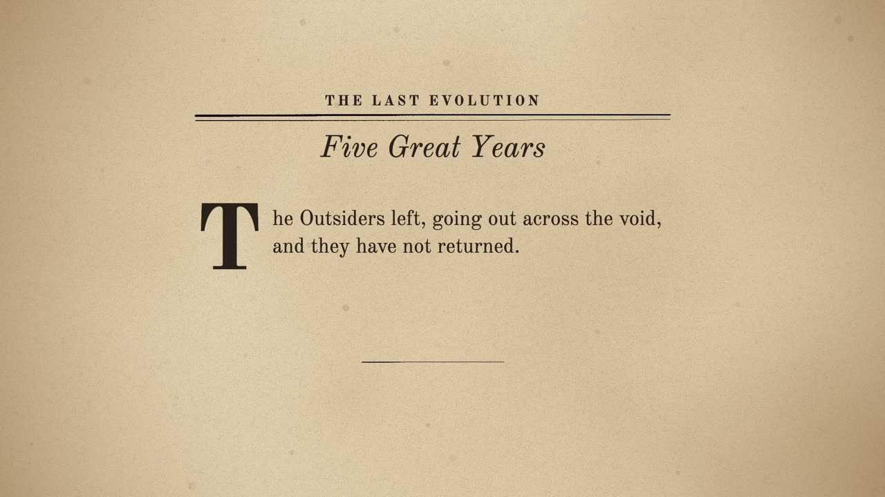
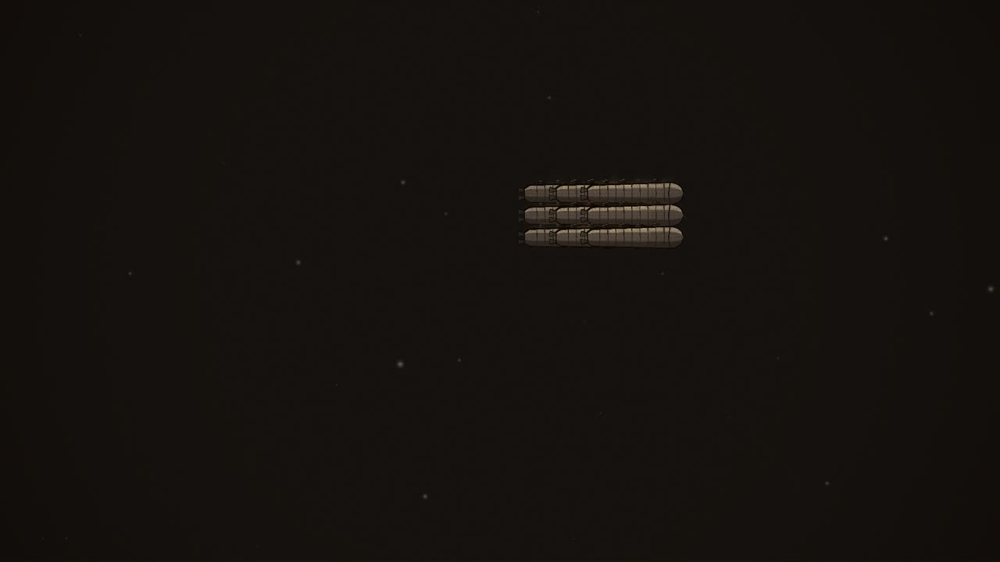
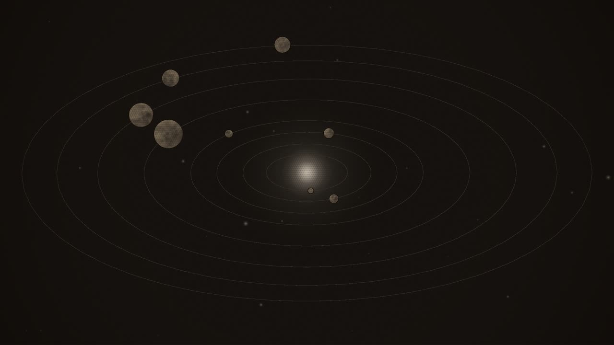
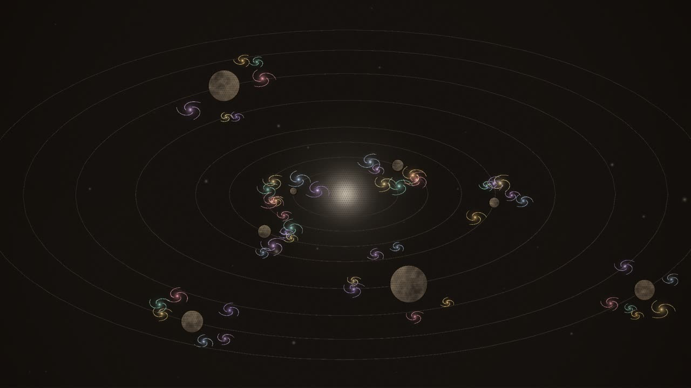
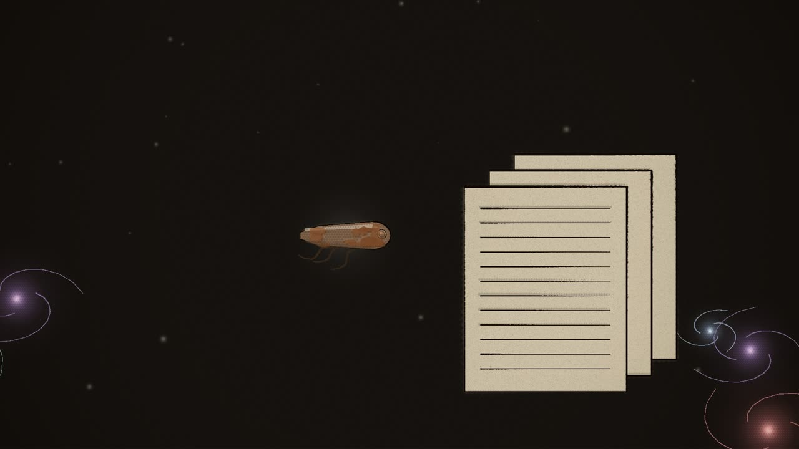
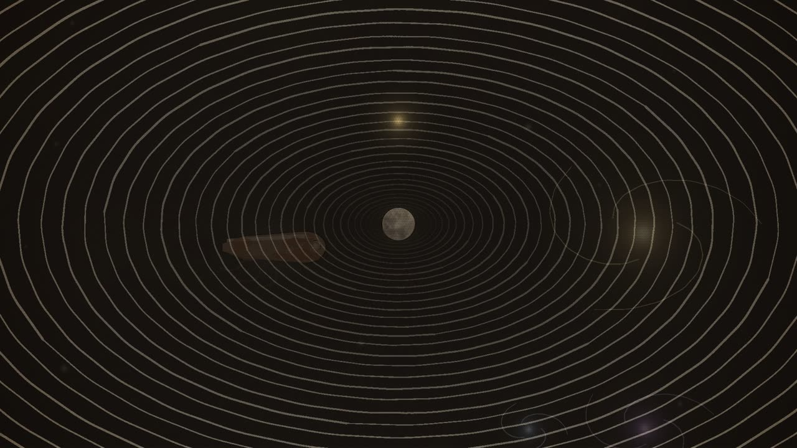
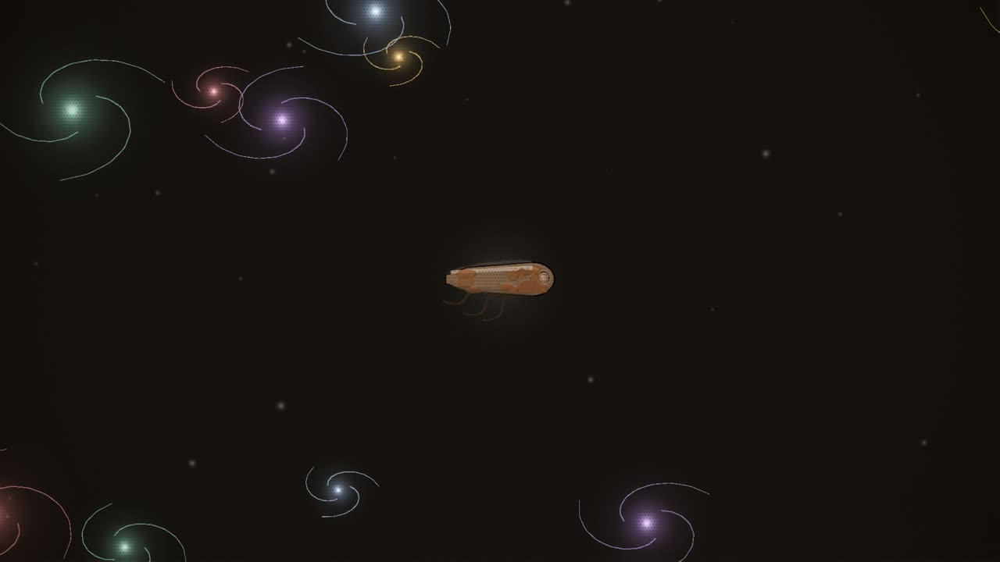
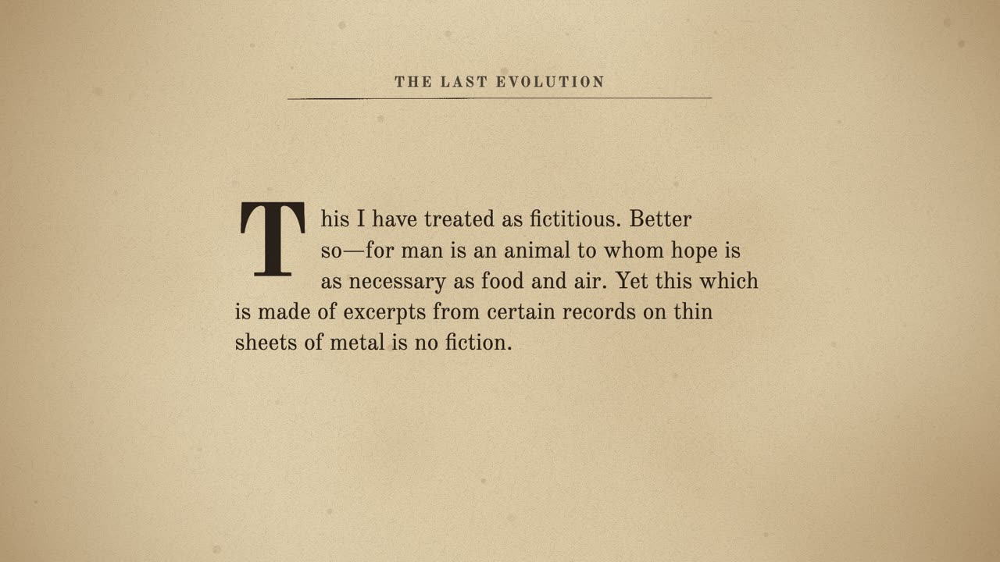
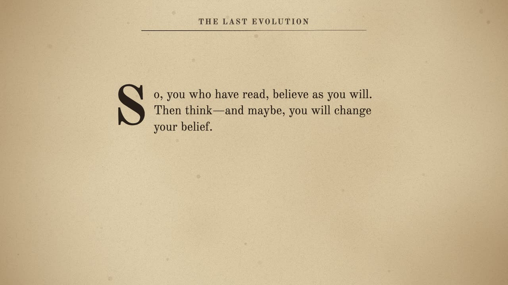
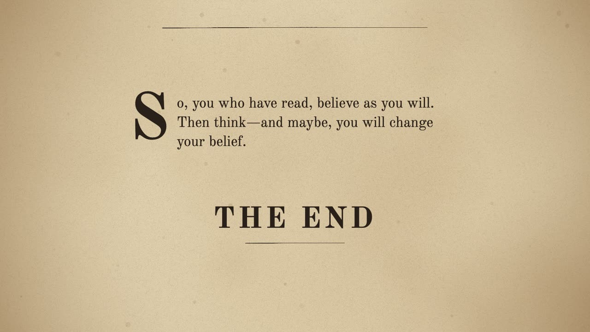

Review · Round 6 · the chapters · the whole film
Chapter 11: Five Great Years, the draft
The latest draft, acted and painted, 2:32 at 12 drawings a second, over the same sound as the storyboard. The frame closes as it opened: F-2 among the beings of force, the mentatype's sheets, then a dissolve to the magazine's page and THE END over the theme.
Notes: pause anywhere, type, and press Enter (or Pin) to pin a note to that moment. They stay in this browser. Copy notes puts them on the clipboard as text, timed and with their shot, for the decision sheet or a message.
Notes
The shots

A The chapter's page 0:00–0:06
seenThe pulp page, Five Great Years, the opening words under a drop cap.
cameraa slow push

B They left 0:06–0:12
seenThe Outsiders' fleet, small, drawing away across the void toward a far star.
cameraholds as they go

C Five Great Years 0:12–0:39
seenThe sun and its planets from far off; the stars wheeling.
cameraa slow pull back

D The last evolution 0:39–0:47
seenThe system full of beings of force, lights in every colour round every planet, in their millions.
cameradrifts in among them

E The last of the machines 0:47–0:57
seenF-2, old and oxidised, among the lights; the mentatype's sheets before it, written full.
camerain to F-2 and the sheets

F Carried back 0:57–1:09
seenA being of force coming to the sheets; then a tunnel of light falling away.
camerafollows the streak into the tunnel

G Oblivion 1:09–1:37
seenF-2 alone, its glow small.
cameraa slow pull back from it

H The page 1:37–2:11
seenThe magazine's page, the text set in its columns.
cameraa slow drift down the page

I Believe as you will 2:11–2:20
seenThe page; the last paragraph.
cameraholds

J THE END 2:20–2:32
seenTHE END, lettered on the page under a rule.
cameraa slow push to the words